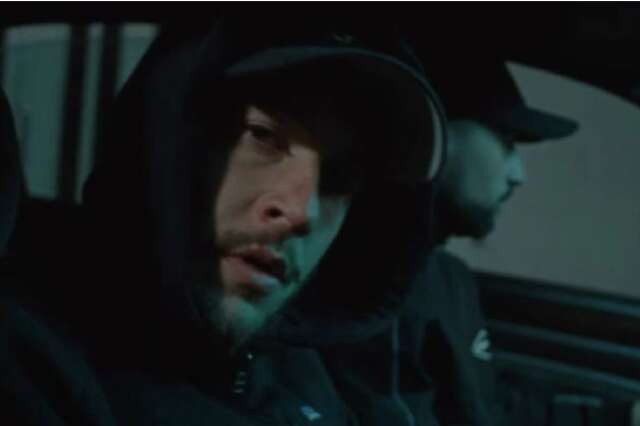
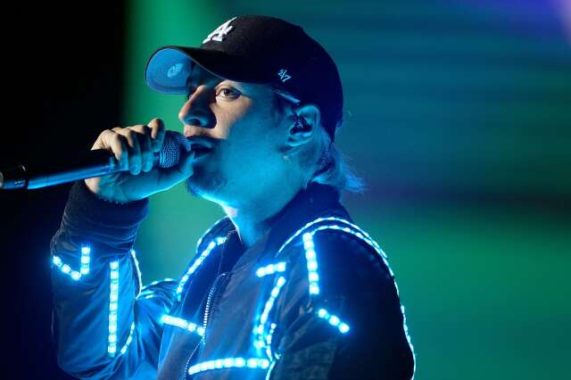

Home
Nekfeu
Luther
Home
Nekfeu
Luther

Nekfeu de retour avec le S-Crew pour le clip "22", avant la sortie de l'album "SZR 2001"

Nekfeu et le S-Crew de retour avec un nouvel album
Nekfeu rend hommage à Népal avec le clip de "Sundance"